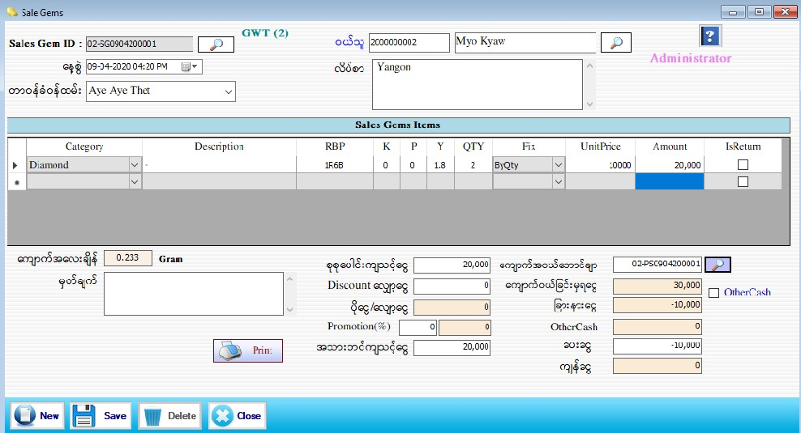

Sale Gems Setup
Sale Gems

- Transaction အောက်မှ Sale Gems Form ကိုဖွင့်ပါ။
- Sales Gem ID ကို Software မှ Auto တပ်ပေးပါမည်။
- နေ့စွဲတွင် လက်ရှိရောက်နေသော Date ကိုပြပေးမည် ဖြစ်သည်။
- တာ၀န်ခံ၀န်ထမ်း၊ ၀ယ်သူတို့ကိုဖြည့်စွက်ပါ။၀ယ်သူ၏ code နံပတ် ကိုအလွတ်သိရှိပါက ရိုက်ထည့်လိုက်လျှင် ၀ယ်သူအမည်နှင့် လိပ်စာ ကျလာမည်ဖြစ်သည်။ ၀ယ်သူ၏ code နံပတ် ကိုအလွတ်မသိရှိပါက ၀ယ်သူဘေးရှိ မှန်ဘီလူကိုနှိပ်ပြီးရွေးချယ်ရပါမည်။
- ဇယားတွင် Category, Description, RBP, Qty, Fix, Unit Price တို့ကိုဖြည့်စွက်ပါ Amount သည် Auto ကျနေပါမည်။
- RBP ကို ဖြည့်စွက်ပါက K,P,Y သည် Auto ပေါ်လာမည်ဖြစ်ပြီး K,P,Y အလေးချိန်ကို ပြန်လည်ပြင်ဆင်ပါက RBP အလေးချိန် သည် “ 0 ” ပြနေပါလိမ့်မည်။
- ကျောက်အလေးချိန်တွင် RBP တွင်သတ်မှတ်ထားခဲ့သော ကျောက်စုစုပေါင်းအလေးချိန်ကို software မှ Auto ပြပေးနေပါလိမ့်မည်။
- အသားတင်ကျသင့်ငွေ၊ ပေးငွေ၊ Discount လျှော့ငွေ ၊မှတ်ချက် တွင် ဖြည့်စွက်ပါ။ စုစုပေါင်းကျသင့်ငွေ၊ ပိုငွေ-လျှော့ငွေ၊ ကျန်ငွေ တို့ကို Software မှ Auto ကျပေးမည် ဖြစ်သည်။
- Promotion ပေးလိုပါက Promotion ပေးမည့် % ကိုရိုက်ထည့်လိုက်ပါက Promotion ပေးသောတန်ဖိုးသည် Auto ပေါ်လာပါမည်။ထို (%) သည် အသားတင် ကျသင့်ငွေပေါ်မူတည်ပြီးတွက်ခြင်းဖြစ်ပါသည်။
- ကျောက်အ၀ယ်ဘောက်ချာဘေးတွင်ပါရှိသောမှန်ဘီလူးကိုနှိပ်ပါက Purchase Stock Form တွင် သတ်မှတ်ခဲ့သော ကျောက်အ၀ယ်ဘောက်ချာ များကျလာပါမည်။ထိုထဲမှဝယ်သူကအလဲပြုလုပ်မည့်ဘောက်ချာကိုရွေးလိုက်လျှင် ဝယ်သူ လဲခြင်းမှရငွေနှင့်အသားတင်ကျသင့်ငွေတို့ကိုခြားနားထားသော ငွေပမာဏကို ခြားနားငွေတွင်တွေ့မြင်နိုင်ပါသည်။
- Other Cash Check Box ကို on ထားလျှင် အရောင်းအ၀ယ် ပြုလုပ်လိုသော ငွေအမျိုးအစားများကို ရွေးချယ်ပြီး ငွေပေးချေနိုင်ပါသည်။
- Data များဖြည့်စွက်ပြီးပါက Save Button ကိုနှိပ်၍ သိမ်းဆည်းနိုင်ပါသည်။ Save Button ကိုနှိပ်ပြီးပါက Message box တစ်ခုတက်လာပါမည်။ Voucher ကိုတစ်ခါတည်းထုတ်မလားဟုမေးခြင်းဖြစ်ပါသည်။OK ဟုနှိပ်လိုက်ပါက Voucher တစ်ခါတည်း ထွက်လာပါမည်။ Cancel ကိုနှိပ်လိုက်ပါက Data များကိုပဲ သိမ်းဆည်းသွားပါမည်။
- သိမ်းဆည်းပြီးသား Data များအား ပြန်လည်ကြည့်ခြင်း၊ ပြင်ဆင်ခြင်းများပြုလုပ်ချင်ပါက Sales Gem ID ၏ ဘေးတွင် ရှိသော မှန်ဘီလူး button ကိုနှိပ်ပြီးပြန်လည်ကြည့်ရှုပြင်ဆင်ချင်သော Sales Gem Item အား ရွေးချယ် ပြီးပြင်နိုင် ပါသည်။
- သိမ်းဆည်းပြီးသား ထည့်ပြီးသား Data များကို ဖျက်လိုလျှင် မှန်ဘီလူး button အားနှိပ်ပြီးရှာပါ။ ထို့နောက် မိမိဖျက်လိုသော Data ကို Delete Button ကိုနှိပ်၍ ဖျက်နိုင်ပါသည်။
- Sales Gem Item အသစ်ထည့်လိုပါက New Button ကိုနှိပ်ပြီး အသစ်ထည့်နိုင်ပါသည်။
- Sales Gem Item Form အား အသုံးပြုပြီးပါက Close Button ကိုနှိပ်၍ ပိတ်နိုင်ပါသည်။